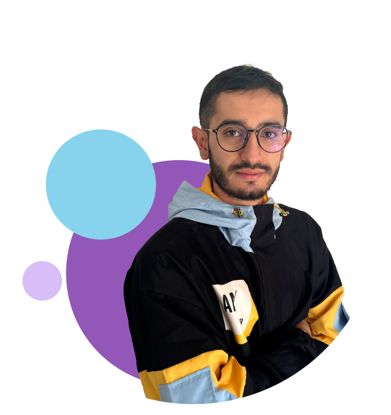

Soy Julián
Y me apasiona el desarrollo Frontend con React
Soy Ingeniero Ambiental apasionado por el desarrollo, encontré en la programación un camino para armar, crear y construir cosas que las personas puedan ver, sentir y utilizar porque desde pequeño adoro esa idea, como pasa con los legos y los rompecabezas... tomar partes más pequeñas y hacer que funcione como un todo. Actualmente estoy estudiando en el programa ONE (Oracle Next Education) y aunque ya había estudiando algunos módulos de JavaScript y Frontend en Platzi, tuve que postergar este camino para culminar mi carrera profesional. Ahora he retomado esta gran pasión que tengo de la mano de Oracle y Alura y espero poder crear y aportar a grandes proyectos.
